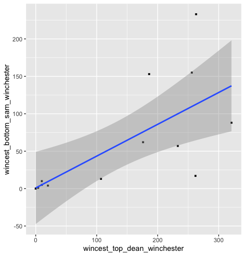
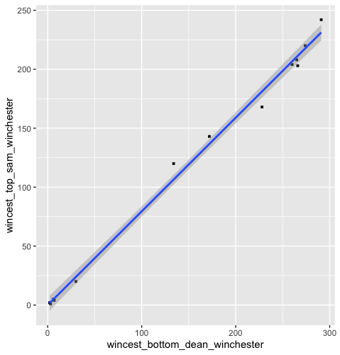

2021.11.09 AO3 WINCEST FANFIC TAG DATA ANALYSIS
20211109 AO3 WINCEST FANFIC TAG DATA ANALYSIS#
1. 统计检验-相关性#
1 | |


1 | |
2. 2007-2020年wincest作品左右位相关tag数变化#
统计结果：
| 2007 | 2008 | 2009 | 2010 | 2011 | 2012 | 2013 | 2014 | 2015 | 2016 | 2017 | 2018 | 2019 | 2020 | |
|---|---|---|---|---|---|---|---|---|---|---|---|---|---|---|
| #Top Dean Winchester/Bottom Sam Winchester# | 0 | 0 | 0 | 0 | 0 | 1 | 0 | 2 | 31 | 18 | 13 | 70 | 70 | 107 |
| #Top Sam Winchester/Bottom Dean Winchester# | 0 | 2 | 0 | 0 | 0 | 3 | 3 | 33 | 30 | 33 | 43 | 63 | 75 | 104 |
| Wincest #Bottom Dean Winchester# | 3 | 2 | 3 | 6 | 7 | 30 | 134 | 265 | 291 | 266 | 260 | 172 | 228 | 274 |
| Wincest #Bottom Sam Winchester# | 0 | 0 | 10 | 5 | 1 | 4 | 13 | 17 | 88 | 57 | 62 | 155 | 153 | 233 |
| Wincest #Top Dean Winchester# | 0 | 0 | 10 | 10 | 4 | 20 | 107 | 262 | 321 | 233 | 176 | 256 | 186 | 263 |
| Wincest #Top Sam Winchester# | 1 | 2 | 2 | 5 | 4 | 20 | 120 | 208 | 242 | 203 | 204 | 143 | 168 | 220 |
可视化：
本博客所有文章除特别声明外，均采用 CC BY-SA 4.0 协议 ，转载请注明出处！